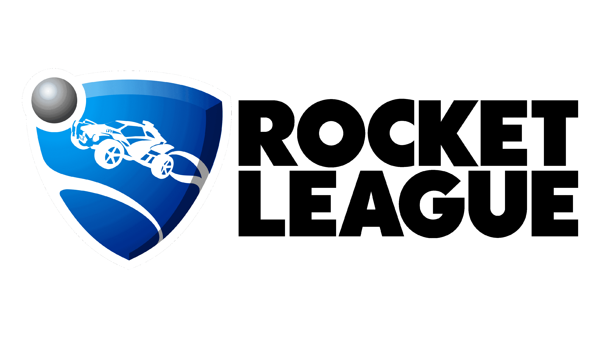

|
|

Presentation
Rocket League est un jeu vidéo de sport développé et édité par Psyonix.
Il sort en juillet 2015 sur Windows et sur PlayStation 4, en février 2016 sur Xbox One, en septembre 2016 sur Linux et Mac et en novembre 2017 sur Nintendo Switch.
Le jeu est inspiré du football : deux équipes, composées de un à quatre joueurs conduisant des véhicules,
s'affrontent au cours d'un match afin de frapper un ballon et de marquer dans le but adverse.
Les voitures sont équipées de propulseurs (boost) et peuvent sauter, permettant de jouer le ballon dans les airs.
Des mises à jour du jeu incluent également d'autres modes de jeu, se rapprochant du basket-ball ou du hockey sur glace.
Rocket League fait suite à Supersonic Acrobatic Rocket-Powered Battle-Cars, un jeu vidéo sorti en 2008 sur PlayStation 3 et également développé par Psyonix. Si ce premier jeu a reçu un accueil mitigé,
une base solide d'amateurs a motivé le studio à produire une nouvelle version, cette fois-ci disponible sur plusieurs plateformes.
Esport
Dès 2016, les développeurs du jeu font part de leur souhait de faire entrer Rocket League sur la scène Esport.
Cela se concrétise quelques mois plus tard par l'annonce du tournoi phare de la scène compétitive Rocket League, les Rocket League Championship Series souvent abrégé en RLCS,
ils sont traduits en français par les "Championnats du monde de Rocket League".